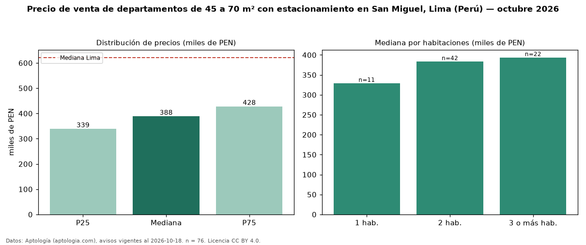

Precio de venta de departamentos de 45 a 70 m² con estacionamiento en San Miguel, Lima (Perú) — octubre 2026
PEN 388.500 es el precio mediano de departamentos de 45 a 70 m² con estacionamiento en venta en San Miguel, Lima (Perú) (n = 76 avisos). Frente a la mediana de los departamentos de 45 a 70 m² en venta de San Miguel (PEN 377.000, n = 167), queda 3 % por encima; este segmento reúne el 46 % de esos avisos. Por metro cuadrado, la mediana es PEN 6.430/m² (n = 76), 1 % por encima de los departamentos de 45 a 70 m² en venta de San Miguel (PEN 6.354/m²). El área mediana anunciada es 59 m². El segmento con más oferta es el de 2 habitaciones (42 avisos, mediana PEN 383.400); pasar de 1 habitación a 3 o más habitaciones cambia la mediana +20 %. La cuota de mantenimiento o condominio mediana declarada es PEN 1,00 al mes (n = 20). La mediana de todos los departamentos en venta de Lima es PEN 621.600 (−38 % de diferencia). La mitad central de los avisos va de PEN 338.925 a PEN 427.750 (razón 1,3), una dispersión baja. Datos: Aptología (aptologia.com), CC BY 4.0 — https://www.aptologia.com/pe/venta/lima/san-miguel. Archivos: PDF, CSV con las cifras y gráfica PNG.

| Avisos únicos | 76 |
|---|---|
| Percentil 25 | COP 338.925 |
| Mediana | COP 388.500 |
| Percentil 75 | COP 427.750 |
| Mediana por m² | COP 6.430 |
Fuente: avisos vigentes de portales inmobiliarios recopilados por Aptología, deduplicados (mínimo 30 avisos únicos por celda). Precios pedidos, no cerrados. Fecha: 2026-10-18.